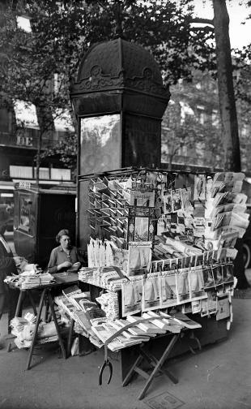

Les kiosques de Paris : trésors
d'une ville
D’aussi loin que peuvent remonter vos souvenirs, vous ne pouvez sûrement pas dissocier le trottoir parisien de ces grosses boîtes verdâtres pleines de lecture, que l’on peut retrouver à tous les coins de rue. Au-delà du simple aspect fonctionnel qu’on pourrait leur prêter au premier abord, les kiosques à journaux (et ceux qui les habitent) portent avec eux une histoire dense, témoignages de leur époque. Histoire qui s’écrit encore aujourd’hui, envers et contre tout, malgré les grands changements qu’ont connus récemment nos modes de vie et la ville de Paris. Ceci est la vie du kiosque, et une trace de l’infinie richesse qu’il contient.


D’aussi loin que peuvent remonter vos souvenirs, vous ne pouvez sûrement pas imaginer le trottoir parisien sans ces grosses boîtes verdâtres pleines de lecture, que l’on peut retrouver à tous les coins de rue. Au-delà du simple aspect fonctionnel qu’on pourrait leur prêter au premier abord, les kiosques à journaux (et ceux qui les habitent) portent chacun une histoire dense, tels des témoignages de leur époque respective. Histoire qui s’écrit encore aujourd’hui, malgré les grands changements qu’ont connus récemment nos modes de vie et la ville de Paris. Ceci est la vie du kiosque, et une trace de l’infinie richesse qu’il contient.
Le kiosque à journaux français, bien qu’omniprésent aujourd’hui, n’a en soi rien d’évident. En effet, le terme en lui-même, issu du perse kūshk voulant dire “palais”, ne désigne originellement qu’un simple mobilier extérieur servant d’agrément, beaucoup plus proche des kiosques à musique que nous pouvons retrouver dans les jardins de Paris aujourd’hui. Cette excentricité française est intimement liée au rapport qu'ont les parisiens avec la presse, notamment avec le mouvement des Lumières et la révolution, qui libère la pensée et l’expression.
A l’origine, les journaux étaient vendus dans des rues très passantes, proche de tavernes, ou dans des grands jardins. C’est ici que sont nés les premiers “kiosques”, de simples installations rudimentaires et temporaires à base de boîtes et de tréteaux, qui servaient à présenter les journaux, semblables aux étals qu’ont encore les bouquinistes sur les quais de Seine.
La première version du kiosque à journaux tel que nous l'imaginons est issue des grandes transformations de la ville de Paris durant le Second Empire. Missionné par le baron Haussmann de moderniser le mobilier urbain parisien, Gabriel Davioud, l’architecte responsable entre autres de la fontaine Saint-Michel et du Théâtre du Châtelet, invente un petit pavillon doté de l’éclairage public, et dédié à la vente de journaux. Ces premiers kiosques ne pouvaient être tenus que par des veuves d’anciens employés de l’Etat (fonctionnaires, militaires). Le tout premier est ouvert le 15 août 1857 sur les Grands Boulevards. Cette version sera très vite remplacée par une nouvelle en 1859 comprenant une colonne surplombée de son fameux dôme métallique.
En 1874, le kiosque devient un bien public lorsque la ville de Paris se fait concéder les 340 kiosques appartenant anciennement à des sociétés privées. Dès lors, le style architectural du kiosque à journaux parisien et son fonctionnement n’évolueront que très peu durant quasiment un siècle. Cependant, au sortir de la Seconde Guerre Mondiale, l’entreprise à qui est confiée la gestion des kiosques, l’Administration d'Affichage et de Publicité (et qui en assure le fonctionnement depuis 1900) , développe l’affichage au néon sur les installations et d’autres innovations, par volonté d’attirer les annonceurs, et de moderniser un style vieillissant. Les kiosques qui en sont issus sont caractéristiques de leur époque.
Cette volonté de rester fidèle à son époque se poursuit pendant la totalité du XXe siècle, au fil des évènements et des modes, et prend un tournant avec l'émergence de la presse numérique au XXIe siècle. Le nombre de kiosques décroît rapidement et ce morceau d’histoire se doit de se réinventer pour survivre. C’est pourquoi les kiosquiers sont autorisés en 2011 à élargir leur activité, ne plus vendre exclusivement des journaux, mais des souvenirs, des collations... Certains kiosques se reconvertissent complètement et deviennent des fleuristes, par exemple
Le kiosque à journaux de notre génération a été conçu en 2014 par Matali Crasset, une designeuse industrielle française. Il se veut plus performant, plus grand, plus agréable. L’exubérance du dôme en guise de toit a laissé place à une forme plus simple et cubique, typiques du style d’architecture contemporain, tout en reprenant les codes et la couleur emblématique du kiosque. En 2018, MediaKiosk, société qui gère les infrastructures, fait remplacer 380 kiosques dans toute la capitale par leur nouvelle version.
Bien que vieux de quasiment deux siècles, le kiosque à journaux est donc en perpétuel changement aujourd’hui, et continuera à évoluer demain. Cependant, malgré cela, il est en tant que tel un formidable témoignage de la pensée de son époque, qu’il soit un simple étal en bois exposant une presse bouillonnante issue de la révolution française, une structure complexe issu de la volonté d’un empire de se montrer moderne, ou un cube avec peu de fioritures respirant la contemporanéité. Et c’est en cela que le kiosque à journaux parisien n’est pas seulement un mobilier, mais une histoire.
Dans les rues animées de Paris en 2023, le kiosquier occupe une place significative. En tant que repère central de la vie urbaine, il est un acteur essentiel de la scène parisienne. Sa présence et son rôle de diffuseur d'informations et de lieu de rencontres contribuent pleinement à ancrer son importance dans le quotidien de la capitale.
La journée d’Erwan Dupas débute tôt. Avant 7h, il est déjà en mouvement. Sa première tâche consiste à préparer le kiosque pour accueillir les clients. Pendant la nuit, les journaux du jour sont arrivés et les invendus de la veille sont repartis. Cela est fait par l'intermédiaire de messagerie comme France Messagerie. Les rayons nécessitent un réapprovisionnement en journaux tout juste arrivés ainsi qu'en magazines et autres articles soigneusement sélectionnés par lui.
Après avoir fait cela, les premiers clients arrivent, et son kiosque s’anime, les clients habituels le saluent et on voit combien ce travail est important en termes de convivialité. Erwan décrit le fait que de moins en moins de personnes s'intéressent à la presse écrite. Ce qui limite la classe d'âge de ces clients habituels à des plus de 60 ans. Plus tard dans la journée, ce kiosque devient un élément d'appel pour les touristes, en effet, beaucoup viennent chercher un petit souvenir et s'essaient à parler français avec le kiosquier. Il ne faut pas négliger non plus le rôle d'indicateur d'adresse pour les gens un peu perdus. Nombreux sont ceux qui repartent avec un cœur léger face à l'aide aimable d’Erwan. Le kiosque n’est pas seulement un attribut économique mais il est aussi et surtout un poste social et d’animation des rues de Paris.
Plusieurs périodes critiques se sont succédé ces derniers temps. Par exemple, la période du covid où les kiosquiers, pourtant considérés comme des professions essentielles, ont failli disparaître faute de clients. Il faut savoir que chaque kiosquier est auto-entrepreneur, ce qui les oblige à générer du chiffre d'affaires s'ils veulent continuer leur métier. Parallèlement, ils se doivent de verser un loyer à la Ville de Paris qui est proportionnel à leur chiffre d'affaires, généralement compris entre 200 et 400€. Heureusement, pendant la pandémie, ce loyer n'était plus dû. Durant pareille époque, la solidarité entre collègues a quand même permis aux uns et aux autres de se soutenir. Elie, un autre kiosquier que nous avons interviewé, nous racontait que sur les 260 kiosquiers qu’il connaissait, nombreux sont ceux qui se donnent des nouvelles par le biais de ce qu’ils appellent une “veille matinale”. Ils s'appellent et s’informent sur leur fonctionnement réciproque. Ils n'ont pas une relation de concurrents mais de collègues.
Peut-on imaginer une reprise de ces kiosques par une nouvelle génération ? Malgré la rénovation de nombreux kiosques, des problèmes restent d'actualité comme l'inexistence de points d’eau et de toilettes, ce qui rend les conditions de travail assez compliquées. La succession semble assez compromise d'autant que la jeune génération semble assez frileuse et peu encline à supporter l’incertitude inhérente à ce métier.
Le métier de kiosquier a toujours existé pour relayer la presse dans Paris. Or le chiffre d’affaires des marchands de journaux a brutalement chuté depuis l’apparition d’Internet et de la presse numérique. Comment les kiosquiers, gardiens de l’information, arrivent-ils à gérer cette baisse soudaine de leur vente ?
Dans les rues animées de la capitale, nous retrouvons des petites maisons vertes pourvu de presse. Mais derrière ces étagères pleines de journaux se cache une vraie lutte pour la survie des kiosquiers à cause de l’avènement du numérique. « Malheureusement, aujourd’hui, nos ventes ont largement diminué avec l’arrivée du numérique », explique Erwan Dupas, kiosquier depuis 28 ans.
La montée en puissance de la presse en ligne a infligé un coup aux ventes de journaux papier. « Aujourd’hui, la presse ne me rapporte plus assez ». Les kiosquiers sont maintenant confrontés à une grande question : comment survivre dans un monde où l’information se diffuse à la vitesse de la lumière ?
Face à la crise de la révolution numérique, les kiosquiers n’étaient pas laissés à eux même. L’État a mis en place une forme de soutien pour ces informateurs, une aide qui leur a été très précieuse. « On a eu les aides de l’État, […] c’était 1500 euros qu’on touchait par mois » raconte Erwan Dupas. Cette aide, très précieuse, était un symbole de reconnaissance de valeur pour les kiosques.
Dans cette quête de survie, une lueur d’espoir émerge des ombres numériques : les produits dérivés. Des tasses, des tours Eiffel, des tote-bags, tous ces produits ont sauvé les kiosquiers du manque de vente de la presse papier.


« C’est malheureux de le dire mais ça représente 80% de mon chiffre d’affaires » nous confie Erwan Dupas. « Sans ces produits dérivés, le kiosque, je pense, serait fermé » ajoute-t-il. Actuellement, la vente des produits dérivés se révèle bien plus performante que la vente de journaux, permettant aux kiosquiers de maintenir leur activité. Cette transition marque un tournant dans leur histoire, illustrant leur aptitude à s'ajuster et à prospérer au sein d'un paysage médiatique en perpétuelle évolution.
Les Jeux Olympiques : une opportunité bénéfique ou une source de préoccupation pour les kiosquiers de Paris ?
À l'approche des Jeux Olympiques, les kiosquiers parisiens se questionnent sur l'impact de cet événement sur leurs activités. Entre attentes et appréhensions, ils espèrent que les JO seront synonymes d'opportunités plutôt que de nouveaux défis pour ces témoins privilégiés de la vie quotidienne. Même si beaucoup redoutent une possible facette négative de cet événement.
Les Jeux Olympiques de Paris 2024 marquent le retour de la capitale française sur la scène olympique. Considérés comme un symbole d'excellence sportive, de paix et de diversité. Paris a été choisie en 2024 pour son héritage olympique, son infrastructure solide et sa vision axée sur la durabilité. Au-delà de la compétition, ces Jeux visent à laisser un impact durable en promouvant le sport, en renforçant la cohésion sociale et en célébrant les valeurs olympiques intemporelles.
Cependant, derrière l'enthousiasme général, certains kiosquiers parisiens s'interrogent sur les implications concrètes de ces Jeux Olympiques pour leurs activités quotidiennes. Comme le souligne un kiosquier du dénommé Erwan Dupas, « on va avoir un regain de monde et d’influence par le biais de tous ces touristes qui vont arriver ». Cette perspective laisse entrevoir des opportunités commerciales certaines pour ceux situés dans des zones touristiques stratégiques.
D'un autre côté, la réalité pourrait être moins réjouissante pour certains kiosquiers, en particulier ceux en dehors des zones touristiques. Pour ceux qui se spécialisent uniquement dans la vente de presse, un constat plus mitigé se dessine. Comme l'exprime un autre kiosquier un peu plus éloigné, « Un gars qui vient voir les Jeux Olympiques, je ne pense pas qu’il s'intéresse à la presse, il ne va pas lire le journal… »
Ainsi, pour ces commerçants, l'afflux de touristes ne se traduirait pas nécessairement par une augmentation significative des ventes. Certains kiosquiers, établis loin des sites olympiques et des zones touristiques, pourraient même craindre de ne pas bénéficier de l'effervescence attendue.
Parmi les zones potentiellement impactées figure le Champ de Mars, des kiosquiers pourraient être délogés pour faire place à des infrastructures olympiques temporaires. Cette situation suscite des inquiétudes, d'autant plus qu'il est déjà question du délogement d'étudiants pour libérer de l'espace nécessaire aux préparatifs des Jeux. Ainsi, si les Jeux Olympiques de Paris 2024 promettent d'apporter un afflux de visiteurs et d'opportunités pour certains kiosquiers parisiens, il est clair que tous ne seront pas logés à la même enseigne.
Rencontre avec Erwan Dupas
De leur apparition à la fin du XVIIIe siècle jusqu'à aujourd'hui, les kiosques ont vécu de nombreuses transformations au fil de celles de la ville et la société auxquelles elle appartient, leur histoire est ponctuée de nombreux événements importants. Rétrospective sur ce qui a mené le kiosque à journaux parisien à ce qu’il est aujourd’hui.
Le kiosque à journaux français, bien qu’omniprésent aujourd’hui, n’a en soi rien d’évident. En effet, le terme en lui-même, issu du perse kūshk voulant dire “palais”, ne désigne originellement qu’un simple mobilier extérieur servant d’agrément, beaucoup plus proche des kiosques à musique que nous pouvons retrouver dans les jardins de Paris aujourd’hui. Cette excentricité française est intimement liée au rapport qu'ont les parisiens avec la presse, notamment avec le mouvement des Lumières et la révolution, qui libère la pensée et l’expression.
A l’origine, les journaux étaient vendus dans des rues très passantes, proche de tavernes, ou dans des grands jardins. C’est ici que sont nés les premiers “kiosques”, de simples installations rudimentaires et temporaires à base de boîtes et de tréteaux, qui servaient à présenter les journaux, semblables aux étals qu’ont encore les bouquinistes sur les quais de Seine.
La première version du kiosque à journaux tel que nous l'imaginons est issue des grandes transformations de la ville de Paris durant le Second Empire. Missionné par le baron Haussmann de moderniser le mobilier urbain parisien, Gabriel Davioud, l’architecte responsable entre autres de la fontaine Saint-Michel et du Théâtre du Châtelet, invente un petit pavillon doté de l’éclairage public, et dédié à la vente de journaux. Ces premiers kiosques ne pouvaient être tenus que par des veuves d’anciens employés de l’Etat (fonctionnaires, militaires). Le tout premier est ouvert le 15 août 1857 sur les Grands Boulevards. Cette version sera très vite remplacée par une nouvelle en 1859 comprenant une colonne surplombée de son fameux dôme métallique.
En 1874, le kiosque devient un bien public lorsque la ville de Paris se fait concéder les 340 kiosques appartenant anciennement à des sociétés privées. Dès lors, le style architectural du kiosque à journaux parisien et son fonctionnement n’évolueront que très peu durant quasiment un siècle. Cependant, au sortir de la Seconde Guerre Mondiale, l’entreprise à qui est confiée la gestion des kiosques, l’Administration d'Affichage et de Publicité (et qui en assure le fonctionnement depuis 1900) , développe l’affichage au néon sur les installations et d’autres innovations, par volonté d’attirer les annonceurs, et de moderniser un style vieillissant. Les kiosques qui en sont issus sont caractéristiques de leur époque.
Cette volonté de rester fidèle à son époque se poursuit pendant la totalité du XXe siècle, au fil des évènements et des modes, et prend un tournant avec l'émergence de la presse numérique au XXIe siècle. Le nombre de kiosques décroît rapidement et ce morceau d’histoire se doit de se réinventer pour survivre. C’est pourquoi les kiosquiers sont autorisés en 2011 à élargir leur activité, ne plus vendre exclusivement des journaux, mais des souvenirs, des collations... Certains kiosques se reconvertissent complètement et deviennent des fleuristes, par exemple
Le kiosque à journaux de notre génération a été conçu en 2014 par Matali Crasset, une designeuse industrielle française. Il se veut plus performant, plus grand, plus agréable. L’exubérance du dôme en guise de toit a laissé place à une forme plus simple et cubique, typiques du style d’architecture contemporain, tout en reprenant les codes et la couleur emblématique du kiosque. En 2018, MediaKiosk, société qui gère les infrastructures, fait remplacer 380 kiosques dans toute la capitale par leur nouvelle version.
Bien que vieux de quasiment deux siècles, le kiosque à journaux est donc en perpétuel changement aujourd’hui, et continuera à évoluer demain. Cependant, malgré cela, il est en tant que tel un formidable témoignage de la pensée de son époque, qu’il soit un simple étal en bois exposant une presse bouillonnante issue de la révolution française, une structure complexe issu de la volonté d’un empire de se montrer moderne, ou un cube avec peu de fioritures respirant la contemporanéité. Et c’est en cela que le kiosque à journaux parisien n’est pas seulement un mobilier, mais une histoire.